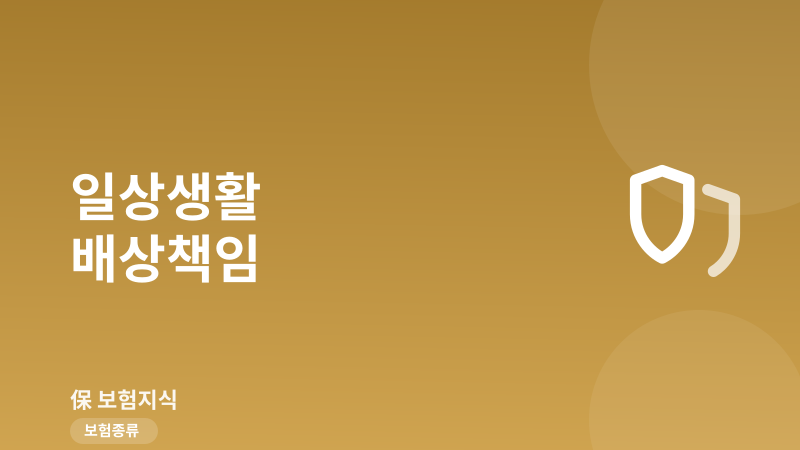
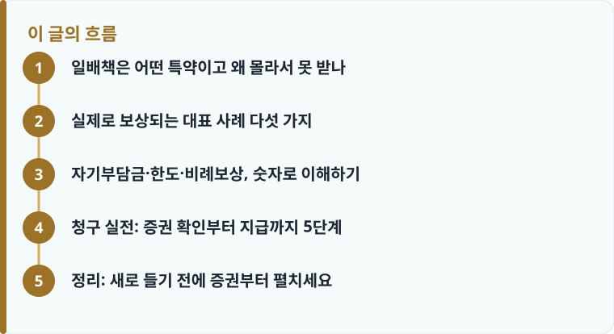

일배책은 단독 상품이 아니라 실손·상해·운전자보험에 월 몇백 원~1천 원대로 붙는 특약이므로, 새로 들기보다 기존 증권부터 확인하는 것이 먼저입니다.
대물 사고는 통상 자기부담금 20만 원을 공제한 뒤 보상하고, 한도는 보통 1억 원 수준입니다. 여러 개 가입해도 실제 손해액 한도 안에서 비례분담합니다.
고의, 본인·동거가족 소유물, 자동차 운전 중 사고, 업무 수행 중 배상은 면책입니다. 수리·합의 전에 반드시 보험사에 먼저 통보하세요.
일배책은 어떤 특약이고 왜 몰라서 못 받나
일상생활배상책임보험, 줄여서 일배책은 피보험자가 일상생활을 하다가 타인의 신체나 재물에 손해를 입혀 법률상 배상책임을 지게 됐을 때, 그 배상금을 대신 보상해 주는 특약입니다. 핵심은 ‘단독으로 파는 상품이 아니다’라는 점입니다. 대부분 실손의료보험, 상해보험, 운전자보험 등에 월 몇백 원에서 1천 원대의 아주 저렴한 특약으로 끼워져 있습니다. 보험료가 워낙 작다 보니 가입자 본인도 이 담보가 증권에 들어 있다는 사실을 모르는 경우가 많습니다.
그래서 실제 사고가 나도 ‘내 보험으로 이런 것도 되나’ 하는 생각조차 못 하고 자기 돈으로 물어 주는 일이 흔합니다. 결론부터 말하면, 새 상품을 알아보기 전에 이미 가입한 실손·운전자·상해보험 증권을 먼저 펼쳐 ‘일상생활배상책임’ 또는 ‘가족일상생활배상책임’이라는 담보명이 있는지 확인하는 것이 순서입니다. 담보명 옆에는 보통 1억 원 같은 가입금액이 적혀 있습니다. 여러 보험을 나눠 가입한 분이라면 각 증권을 모두 확인해야 하는데, 이 원리는 실손보험 중복가입과 비례보상에서 다룬 것과 같은 맥락입니다.
실제로 보상되는 대표 사례 다섯 가지
말로만 설명하면 감이 잘 오지 않으니, 실제로 일배책 청구가 인정되는 대표적인 상황을 구체적으로 보겠습니다. 첫째, 마트나 매장에서 아이가 진열된 물건을 건드려 깨뜨린 경우입니다. 아이가 실수로 유리 제품이나 전시 상품을 파손했다면 부모가 배상책임을 지는데, 가족형 특약이면 이 손해가 보상 대상이 됩니다.
둘째, 자전거를 타다가 행인을 치어 다치게 한 경우입니다. 자전거는 자동차보험 대상이 아니어서 이런 대인 사고의 치료비가 큰 부담이 되는데, 일배책의 대인배상으로 처리할 수 있습니다. 셋째, 산책 중 반려견이 다른 사람을 물어 치료비가 발생한 경우입니다. 반려동물 사고는 견주의 관리책임으로 배상 의무가 생기며, 이는 반려동물 보험과는 별개로 일배책으로도 대응할 수 있는 대표 사례입니다. 넷째, 집에서 누수가 생겨 아랫집 천장과 가구가 손상된 경우로, 이때는 ‘가족일상생활배상책임’ 또는 누수 담보가 있어야 처리됩니다. 다섯째, 주차장에서 차 문을 열다가 옆 차를 긁은 경우입니다. 운전 중 사고는 자동차보험 소관이지만, 문콕처럼 ‘운전 중’이 아닌 상황의 대물 손해는 일배책으로 보는 것이 일반적입니다.

자기부담금·한도·비례보상, 숫자로 이해하기
보상 여부만큼 중요한 것이 ‘얼마를 받느냐’입니다. 대물 사고는 통상 자기부담금 20만 원을 공제한 뒤 나머지를 보상합니다. 예를 들어 아랫집 수리비가 150만 원이면 20만 원을 뺀 130만 원 선에서 보상받는 식입니다. 반대로 손해액이 20만 원 이하인 소액 파손은 자기부담금에 걸려 실익이 없을 수 있습니다. 보상한도는 상품마다 다르지만 대체로 1억 원 수준으로 설정되는 경우가 많아, 누수처럼 손해가 커질 수 있는 사고까지 상당 부분 감당할 수 있습니다.
또 하나 반드시 알아야 할 개념이 ‘비례보상’입니다. 일배책은 여러 개를 가입해도 실제 손해액을 초과해 받을 수 없습니다. 만약 두 보험에 각각 일배책이 있다면, 두 회사가 실제 손해액 한도 안에서 비례해 나눠 지급합니다. 즉 100만 원 손해에 두 개를 걸어도 200만 원이 나오는 것이 아니라 합쳐서 100만 원까지만 나옵니다. 그래서 일배책은 여러 개 들 이유가 전혀 없고, 하나만 제대로 갖고 있으면 충분합니다. 이 손해보험 특유의 실손보상 원리는 실손 중복가입 시 비례보상 구조와 완전히 같습니다.
보상이 되지 않는 면책 사유도 명확히 알아 둬야 헛걸음을 줄입니다. 고의로 낸 사고, 본인이나 동거가족이 소유·사용·관리하는 물건에 입힌 손해, 직무나 업무 수행 중의 배상책임, 자동차를 운전하다 낸 사고(이는 자동차보험 대물이 처리), 남에게 빌리거나 보관 중인 물건의 손해, 지진·전쟁 등은 통상 보상 대상이 아닙니다. 특히 ‘업무 중’과 ‘운전 중’이 빠진다는 점은 자주 오해하는 부분이니 기억해 두면 좋습니다.
작성·검수 기준
이 글은 특정 보험사의 상품을 권유하기 위한 것이 아니라, 이미 일상생활배상책임 특약을 보유한 소비자가 자신의 권리를 놓치지 않도록 일반적인 기준과 사례를 설명하기 위해 작성했습니다. 자기부담금(통상 대물 20만 원), 보상한도(대체로 1억 원 수준), 가족형 여부와 누수 담보 포함 여부, 면책 범위는 가입 시점의 약관과 개별 상품에 따라 달라질 수 있습니다.
특히 누수 배상은 주택 소유·거주 요건과 ‘가족일상생활배상책임’ 담보가 함께 있어야 처리되는 경우가 많으므로, 본인 증권의 담보명과 조건을 직접 확인해야 합니다. 청구에 필요한 서류는 보험금 청구 서류 체크리스트에서 함께 확인하는 것이 정확합니다.
청구 실전: 증권 확인부터 지급까지 5단계
일배책은 아는 만큼 받는 특약입니다. 사고가 났을 때 감정적으로 상대와 먼저 합의부터 하면 오히려 보상에 불리해질 수 있으므로, 순서를 지키는 것이 중요합니다. 세입자라면 누수·화재 관련 책임 범위를 세입자 화재보험과 누수 배상에서 함께 정리해 두면 대응이 한결 수월합니다. 아래 순서대로 진행하세요.
- 먼저 실손·운전자·상해보험 증권에서 ‘일상생활배상책임’ 또는 ‘가족일상생활배상책임’ 담보와 가입금액이 있는지 확인합니다.
- 사고가 나면 상대와 임의로 합의하거나 수리를 진행하기 전에 보험사에 먼저 사고를 접수·통보합니다.
- 대물 사고는 파손 사진, 수리 견적서, 영수증 등 손해 입증자료를 확보합니다.
- 대인 사고는 병원 진단서와 치료비 영수증 등 치료 사실을 증명하는 서류를 모읍니다.
- 자기부담금(대물 20만 원)과 한도를 감안해 보험사 심사를 거쳐 배상금을 지급받습니다.
정리: 새로 들기 전에 증권부터 펼치세요
일배책은 월 몇백 원짜리 특약이지만, 누수·자녀·반려견·자전거·문콕 같은 일상 사고에서 수십만 원에서 수천만 원의 배상금을 대신 막아 주는 실속 담보입니다. 핵심은 새로 가입하기보다 이미 있는 증권을 확인하는 것, 그리고 대물 20만 원 자기부담금과 1억 원 한도, 여러 개 들어도 비례보상뿐이라는 세 가지 숫자를 기억하는 것입니다. 사고가 나면 합의보다 보험사 통보가 먼저라는 원칙만 지켜도 받을 돈을 놓치지 않습니다.
다른 보험 정보 글이 궁금하다면 보험지식 블로그에서 이어 읽어 보세요. 가입 전에는 반드시 약관과 상품설명서를 확인하는 것이 가장 안전한 방법입니다.